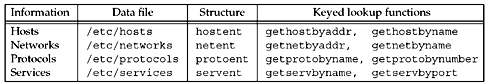

| [ Team LiB ] |
|
11.21 Other Networking InformationOur focus in this chapter has been on hostnames and IP addresses and service names and their port numbers. But looking at the bigger picture, there are four types of information (related to networking) that an application might want to look up: hosts, networks, protocols, and services. Most lookups are for hosts (gethostbyname and gethòstbyaddr), with a smaller number for services (getservbyname and getservbyaddr), and an even smaller number for networks and protocols. All four types of information can be stored in a file and three functions are defined for each of the four types:
Each of the four types of information defines its own structure, and the following definitions are provided by including the <netdb.h> header: the hostent, netent, protoent, and servent structures. In addition to the three get, set, and end functions, which allow sequential processing of the file, each of the four types of information provides some keyed lookup functions. These functions go through the file sequentially (calling the getXXXent function to read each line), but instead of returning each line to the caller, these functions look for an entry that matches an argument. These keyed lookup functions have names of the form getXXXbyYYY. For example, the two keyed lookup functions for the host information are gethostbyname (look for an entry that matches a hostname) and gethostbyaddr (look for an entry that matches an IP address). Figure 11.21 summarizes this information. Figure 11.21. Four types of network-related information. How does this apply when the DNS is being used? First, only the host and network information is available through the DNS. The protocol and service information is always read from the corresponding file. We mentioned earlier in this chapter (with Figure 11.1) that different implementations employ different ways for the administrator to specify whether to use the DNS or a file for the host and network information. Second, if the DNS is being used for the host and network information, then only the keyed lookup functions make sense. You cannot, for example, use gethostent and expect to sequence through all entries in the DNS! If gethostent is called, it reads only the /etc/hosts file and avoids the DNS.
|
| [ Team LiB ] |
|